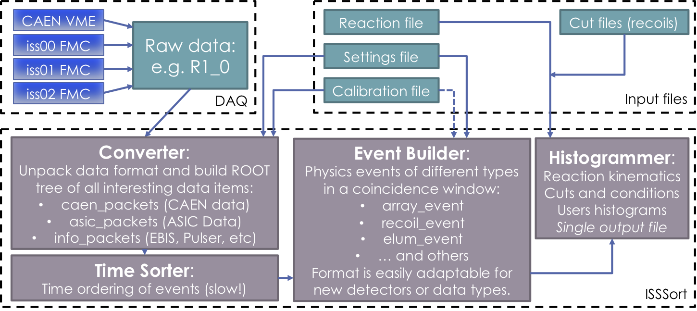

|
ISSSort
|
|
ISSSort
|
A code for sorting raw data from the ISOLDE Solendoidal Spectrometer in MIDAS format.
If you are using this code for any of your publications, please cite it using the DOI: 10.5281/zenodo.6366317
For the full details of how to use ISSSort, please take a look at the Wiki here on GitHub: https://github.com/ISOLDESolenoidalSpectrometer/ISSSort/wiki
Some basic intructions are included in the below README.
if you add the ISSSort/bin to your PATH variable. You can also add ISSSort/lib to your (DY)LD_LIBRARY_PATH too.
or
If you start the code without any flags, it will launch the GUI. To run in batch mode, simple pass at least one file to the programme with the -i flag.
The input options are described below.
The code can be run entirely with default values, meaning that none of the additional input files are required in order to sort the data.
Running iss_sort with a list of input files, using the -i flag, will simple convert them to ROOT format. This step produces one output file per input file, which has the name of the input file, appended with .root.
If a calibration file is added with the -c flag, the ADC data is calibrated for energy. An example calibration file is included in the source of this code, including a description of the format.
A settings file can also be included with the -s flag to overwrite any of the defaults for the configuration of the electronics and detectors. An example settings file is included in the source of this code, including a description of the format.
The ouptut file contains a single ROOT tree of the data and a series of diagnostic histograms and singles spectra. If the output file already exists, iss_sort will skip this step unless the -f flag is used.
If this is a calibration source run, declare the -source flag, which skips the following unnecessary stages of analysis. The output file in this case will not have any tree data and will be appended with _source.root. If you add the -autocal flag, the programme assumes you have given data from a quadruple alpha source and will attempt to perform an automatic strip-by-strip calibration. To correct for energy losses accuratley, you must also provide a reaction file with the Mfield, TargetArrayDistance and ArrayDeadLayer parameters at minimum.
In order to combine timestamp and ADC data, the time sorting step needs to be performed. This step is contained within the conversion step as long as you are not using the -source flag and time-sorted data will then be written to the iss_sort tree. This is potentially the slowest part of the process if there is a lot of data out of order due to the number of I/O operations.
The next step is the event builder, which runs if the -e flag is used, or automatically if a new file has been converted. This uses the calibrated, time sorted data from the previous step to produce one output file per input, appended with _events.root. The same settings file from the Converter step is reused for the same parameters, plus the length of the build window (default 3 µs). There is a plan to have these setting written in to the ROOT file itself, so the file doesn't need to be passed again, but this isn't the case yet.
Events are built according to the particles on the array, correlating n- and p-side data, and also for recoil events, elum events, and ZeroDegree events in separate classes. This format is all contained within the ISSEvts class, which you can browse to see which functions are available. If you open the output file and want to draw directly from the evt_tree, you can load the library with gSystem->Load("/path/to/ISSSort/lib/libiss_sort.so") or by adding it to your .rootlogon.C. Then you have access to all the member functions like array_event->GetZ(), recoil_event->GetEnergyLoss(), elum_event->GetSector(), etc.
Finally a bunch of standard physics histograms are built using input from the reaction file, given with the -r flag. An example reaction file is included in the source of this code, including a description of the format.
The code will now chain together all of the event trees from the previous step to produce a single output file given with the -o flag. The default file name will be the first input file appended with _hists.root.
At this stage, you can generate cuts on the recoil spectra or the energy versus z plots and add them to the reaction file. Pulse height corrections are also performed at this step to account for the non-lineary energy response to light ions in silicon.
Users can edit this code as they please, producing their own plots. There is no "user input" specifically, but if there are extra histograms that are of use to the community, please send me an email or raise a feature request on GitHub and I will consider adding it to the standard code.
You can sort simulation output files from NPTool by using the -nptool flag. You need to give the ROOT file containing the SimulatedTree as the input and the reaction file as normal.
One can perform fusion-evaporation simulations using the output from PACE4, by passing the -pace4 flag. You need to give the pName.particles file that is produced by PACE4 containing the Monte-Carlo proton and alpha particle data as the input and the reaction file as normal.
You also need to have ROOT installed with a minumum standard that your compiler supports C++14. At the moment it works with v5 or v6, but let me know of any problems. ROOT must be built with GSL library support, otherwise known as MathMore. To check this is true, you can type: root-config --has-mathmore and hope the response is yes. If it isn't, you will need to install the GSL libraries and reconfigure/rebuild ROOT.
